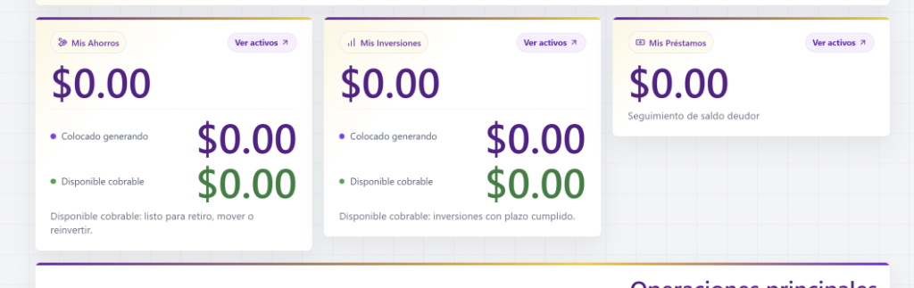
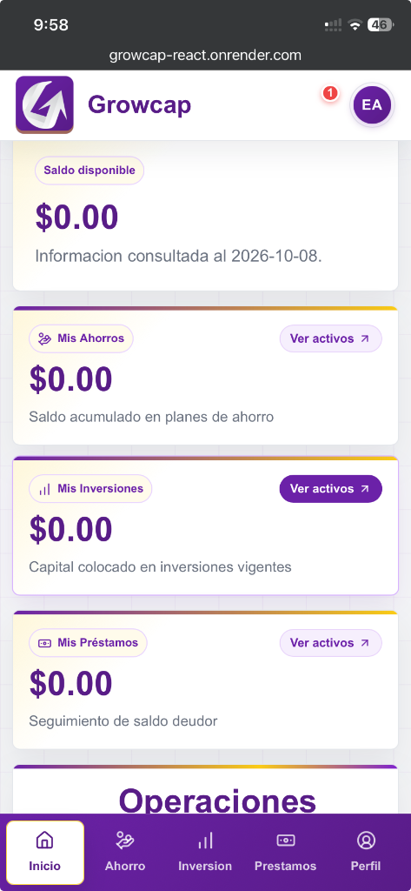
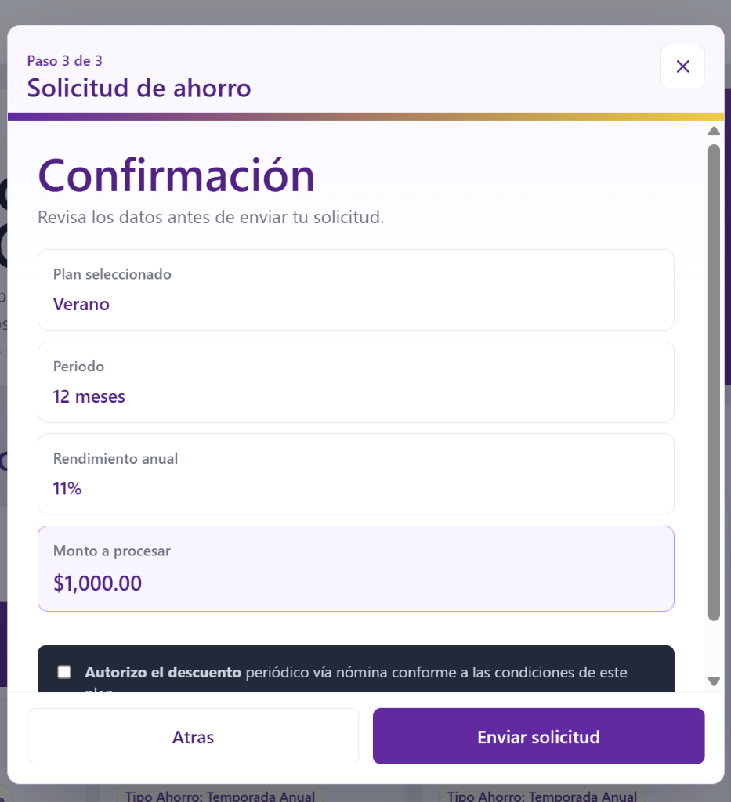
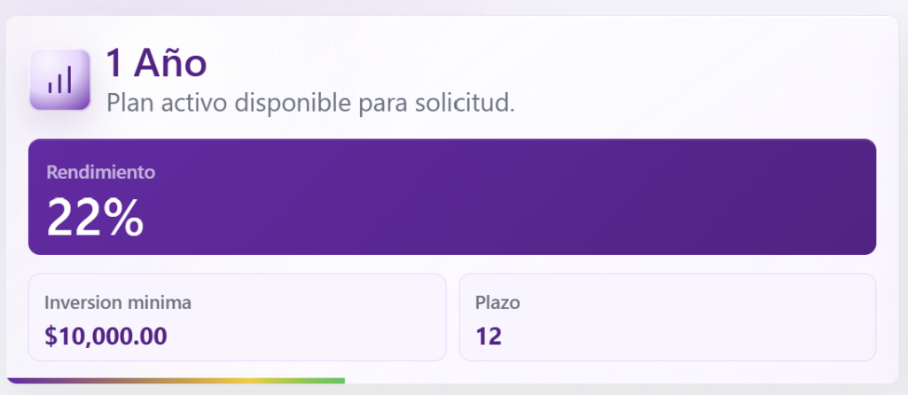
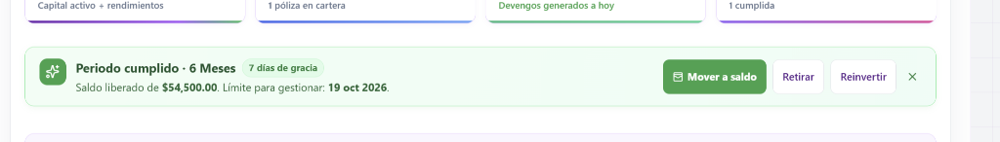
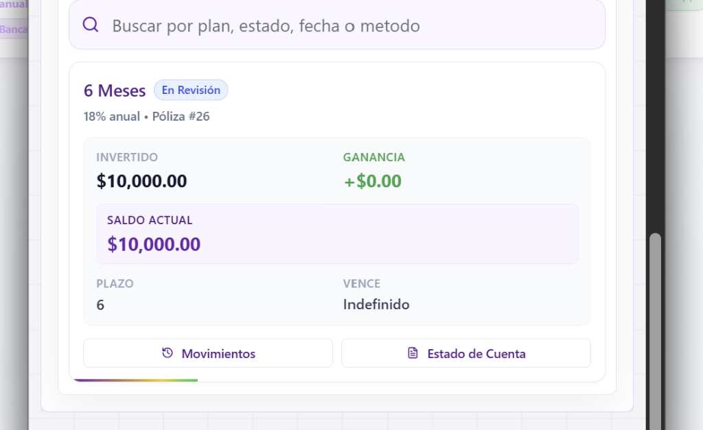
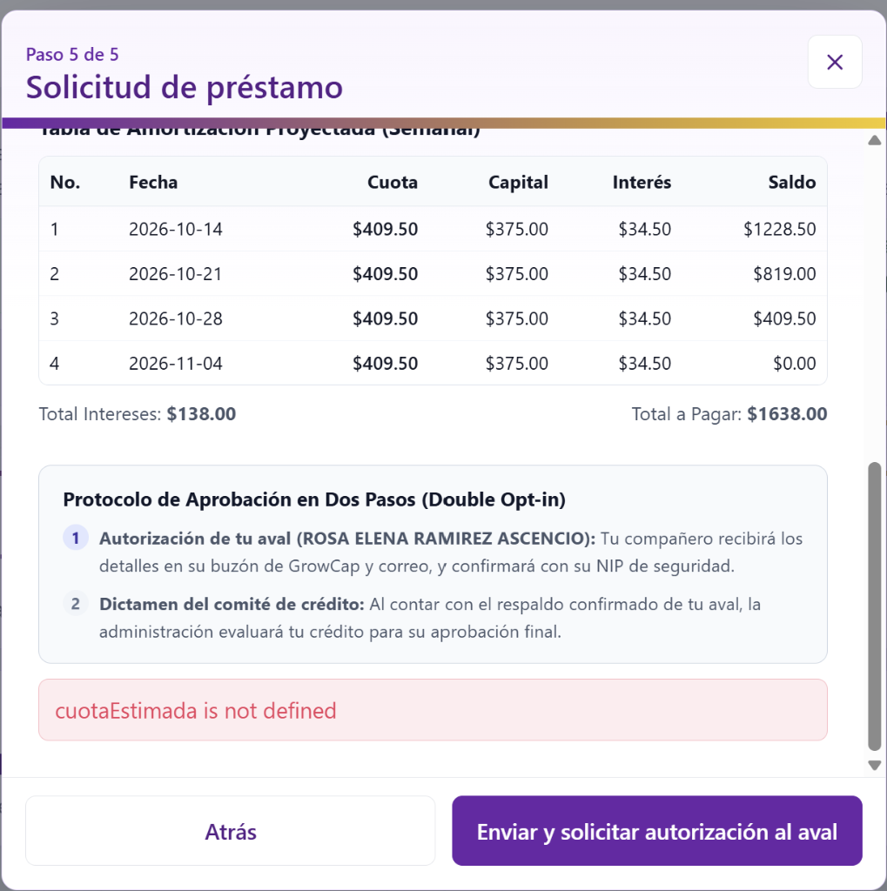
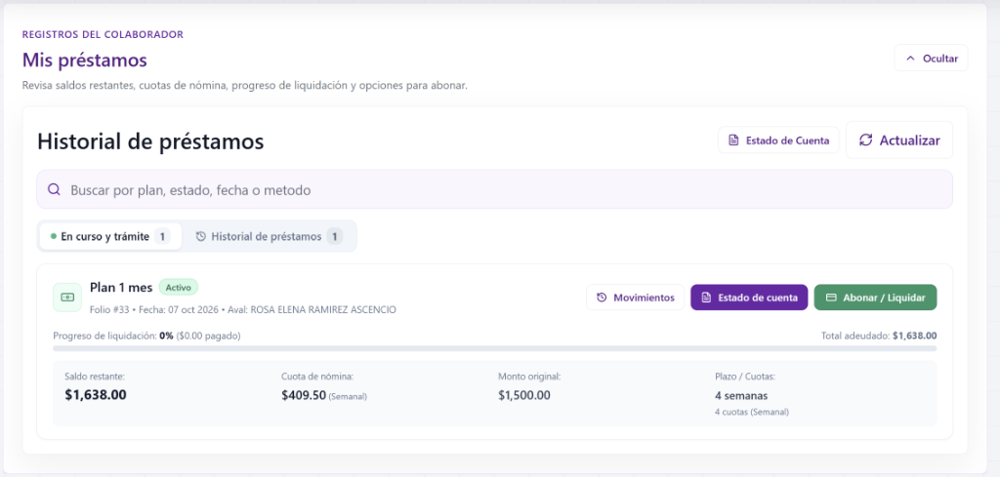
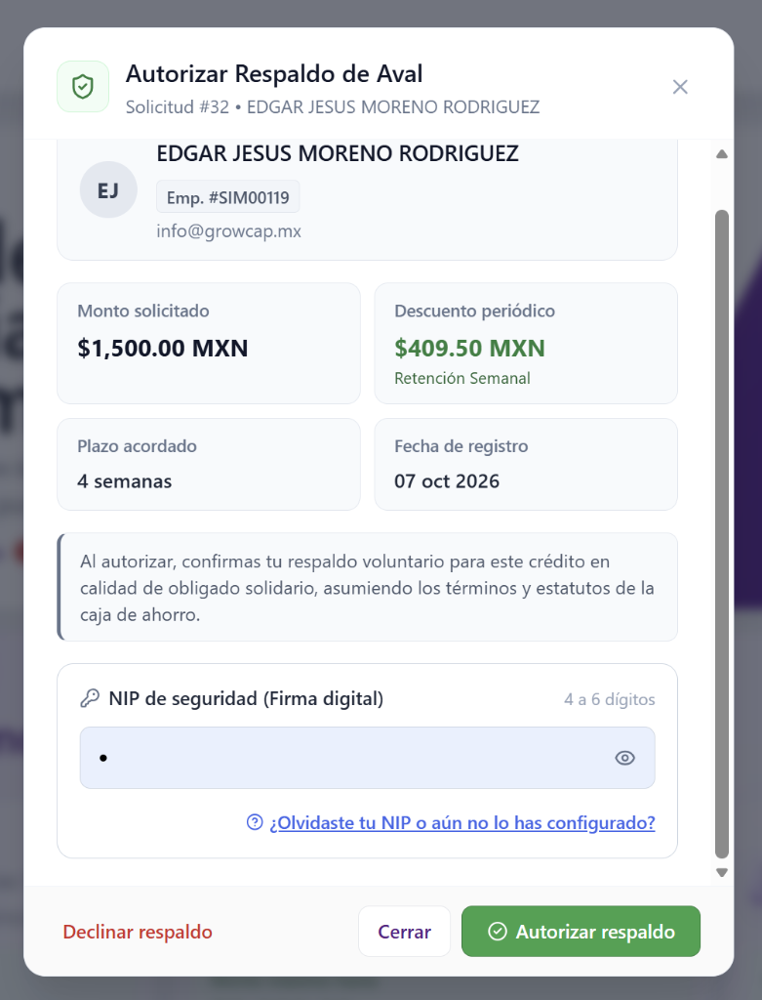

Aprende a gestionar tu dinero, hacer crecer tu patrimonio mediante ahorro e inversiones garantizadas y tramitar préstamos con descuentos cómodos vía nómina de manera segura y transparente.
En GrowCap no hay conceptos confusos ni letras chiquitas. Tu dinero se divide claramente entre lo que tienes listo para retirar y lo que está colocado generando ganancias diarias.
Saldo Disponible (General)
Es tu dinero 100% líquido e inmediato. Puedes retirarlo en cualquier momento a tu cuenta bancaria personal vía SPEI o usarlo para abrir una nueva inversión sin tener que depositar de nuevo.
Saldo Colocado (En Rendimiento)
Capital activo dentro de un plan de ahorro o inversión a plazo fijo. Está protegido y generando intereses a tu favor día con día durante el tiempo acordado.
Saldo Deudor (Préstamos)
Muestra el monto total pendiente por liquidar de tu préstamo activo. Conforme se apliquen tus descuentos de nómina, esta cifra disminuirá hasta llegar a $0.00.
¿De dónde sale tu Saldo Disponible?
Se compone de tres fuentes: (1) Depósitos libres que aún no colocas en un plan, (2) Saldos liberados de planes de ahorro que alcanzaron su meta, y (3) Inversiones a plazo vencidas con su capital e intereses que decidiste no reinvertir.
2
Inicio (Dashboard y Productos Activos)
La pantalla de inicio te ofrece una visión clara de tus finanzas: tu saldo disponible al momento, accesos rápidos de operación y el estado de cada uno de tus productos.
https://app.growcap.mx/dashboard

Clic para ampliar
Ilustración 1: Tarjetas principales de la cuenta del cliente: desglose de capital colocado generando rendimientos vs disponible cobrable para retiro.
https://app.growcap.mx (Vista Móvil / PWA)

Clic para ampliar
Ilustración 2: En tu celular dispones de una barra de navegación inferior permanente para moverte entre Inicio, Ahorro, Inversión, Préstamos y Perfil.
Botón "Movimientos"
Consulta tu Kardex completo con fecha, concepto y monto de cada abono, retiro, descuento o ganancia acreditada.
Botón "Retirar"
Solicita el envío de tu saldo disponible directamente a tu cuenta bancaria registrada ingresando tu NIP de 4 dígitos.
Botón "Depositar"
Accede a los datos bancarios oficiales para realizar transferencias SPEI y adjuntar tu comprobante de pago.
3
¿Cómo ingresar dinero? (Depósitos SPEI)
Agregar fondos a tu cuenta de GrowCap es muy sencillo. Todo depósito se acredita mediante transferencia bancaria verificada por tesorería.
Realiza la transferencia desde la app de tu banco
Ingresa a tu banca móvil habitual (BBVA, Banorte, Santander, etc.) y transfiere a la cuenta CLABE oficial que aparece en la ventanilla de depósito de GrowCap.
Usa la referencia sugerida
En el concepto de tu transferencia coloca la referencia que te indica el sistema (ejemplo: DEP-123-4567). Esto permite identificar tu pago de inmediato.
Registra el comprobante en la plataforma
En el botón "Depositar", indica el monto exacto, la fecha y sube la foto o archivo PDF emitido por tu banco (máximo 15 MB).
Acreditación en tu Saldo Disponible
Tu solicitud quedará en estado "En Revisión" y al validarse pasará a "Acreditado", sumándose al instante a tu Saldo Disponible.
Historial siempre a la mano
En la pestaña Historial de Depósitos podrás consultar en todo momento el listado de tus comprobantes enviados con su fecha, monto y estatus de aprobación.
4
Caja de Ahorro: Modalidades y Reglas
Elige cómo ahorrar según tus necesidades: liquidez inmediata para imprevistos diarios o planes programados con descuento vía nómina para metas mayores.
https://app.growcap.mx/ahorros/solicitar

Clic para ampliar
Ilustración 3: Paso final de solicitud de ahorro donde revisas el plan, el plazo, la tasa pactada y autorizas el descuento de nómina.
Modalidad
Tasa Anual
Monto Mínimo
Plazo Mínimo
Disponibilidad
Siempre Disponible
10.00%
$100.00 MXN
Sin plazo forzoso
Inmediata (retira cuando lo necesites)
Ahorro Programado
12.00%
$100.00 MXN
2 meses
Al cumplir el plazo (10 días de gracia)
Aportaciones Voluntarias
En cualquier día del mes puedes abonar dinero extra a tu cuenta de ahorro para incrementar tu capital y ganar más intereses.
Pausar y Reanudar
Si pasas por una quincena difícil, puedes pausar temporalmente las cuotas de tu ahorro programado sin perder tus rendimientos y reanudarlas después.
Periodo de Gracia (10 Días)
Al cumplirse el plazo meta de tu ahorro, tienes 10 días para retirar o transferir tu dinero antes de que se renueve automáticamente.
5
Inversiones a Plazo Fijo: Haz Crecer tu Dinero
En una inversión a plazo fijo tu dinero queda colocado durante un periodo determinado a cambio de una tasa de rendimiento alta y garantizada.
https://app.growcap.mx/inversion/planes

Clic para ampliar
Ilustración 4: Catálogo de planes de inversión con rendimientos de hasta el 22% anual e inversión mínima accesible.
Plan de Inversión
Plazo
Rendimiento Anual
Monto Mínimo
Monto Máximo
Plan 6 Meses
6 meses
18.00% Anual
$10,000.00 MXN
$300,000.00 MXN
Plan 1 Año
12 meses
22.00% Anual
$10,000.00 MXN
$250,000.00 MXN
https://app.growcap.mx/inversion/vencimiento

Clic para ampliar
Ilustración 5: Al vencer tu inversión, cuentas con un periodo de gracia donde puedes mover el saldo a disponible, retirarlo a tu banco o reinvertirlo para un nuevo ciclo.
https://app.growcap.mx/inversion/polizas

Clic para ampliar
Ilustración 6: Detalle de póliza activa: visualiza tu capital invertido, plazo, fecha de corte y descarga tu estado de cuenta con un clic.
6
Préstamos y Reglas de Financiamiento
Créditos solidarios diseñados para apoyarte ante imprevistos, con descuento automático en tu nómina para que nunca caigas en mora involuntaria.
Plan de Crédito
Plazo
Semanas
Tasa Total
Monto Mínimo
Monto Máximo
Antigüedad Laboral
Respiro
1 mes
4 semanas
11.20%
$500.00
$1,500.00
6 meses (0.5 años)
Impulso
2 meses
12 semanas
24.80%
$500.00
$5,000.00
1 año
Emprende
6 meses
24 semanas
35.18%
$500.00
$16,000.00
1.5 años
https://app.growcap.mx/prestamos/solicitar/cuotas

Clic para ampliar
Ilustración 7: Tabla de pagos semanal con desglose de cuota fija, capital, interés y saldo restante antes de enviar a autorización.
https://app.growcap.mx/prestamos/mis-creditos

Clic para ampliar
Ilustración 8: Seguimiento en tiempo real de tu préstamo: saldo pendiente, cuota de nómina, barra de progreso y botón para adelantar pagos vía SPEI.
1. Regla del Tope del 30%
Tu cuota de pago no puede superar el 30% de tu sueldo por nómina. Es una protección legal para garantizar que siempre cuentes con ingresos suficientes para tu familia.
2. Regla de Préstamo Único
Solo puedes tener un préstamo activo a la vez. Al liquidar tu crédito actual en su totalidad, puedes solicitar uno nuevo inmediatamente.
3. Descuento Directo
Tus pagos se descuentan de forma automática en tu recibo de nómina según tu calendario (semanal, quincenal o mensual).
7
Todo sobre el Aval Solidario
El aval es el copiloto financiero en un préstamo. Conoce cómo funciona este respaldo y cómo se autoriza de forma 100% digital y segura.
¿Qué significa ser Aval Solidario?
Ser aval significa dar tu respaldo y confianza a un compañero de trabajo. Adquieres la responsabilidad legal y moral de responder solidariamente por el saldo deudor si el titular no cumple sus pagos. Solo debes respaldar a personas de tu entera confianza.
Ilustración 9: Pantalla del cliente para seleccionar garantía: para montos menores a $2,000 puedes elegir Auto-Garantía con tu propio ahorro o el código de tu aval.
https://app.growcap.mx/cliente/avales/autorizar

Clic para ampliar
Ilustración 10: Ventana del compañero aval: revisa los datos del solicitante, monto, cuota semanal, y confirma ingresando su NIP secreto de seguridad.
Código Dinámico de 48 Horas
El compañero que será aval genera en su cuenta un código temporal (ej: AVL-7K9B2M). Este código vence a las 48 horas y solo puede utilizarse una vez.
Autorización Obligatoria con NIP
Tras enviar la solicitud, el aval recibe una notificación en su cuenta. Revisa monto y cuota, y autoriza ingresando su NIP secreto.
Límite de 1 Aval Activo
Para proteger a los colaboradores, un usuario solo puede ser aval de un solo crédito activo a la vez hasta que sea liquidado.
8
Perfil, Seguridad y Tus Datos
Tu cuenta está resguardada con altos estándares de seguridad financiera. Mantén al día tu cuenta bancaria y beneficiarios.
Tu Cuenta Bancaria (CLABE de 18 dígitos)
Registra tu cuenta CLABE personal. Todos los retiros solicitados se transferirán únicamente a esta cuenta a tu nombre para evitar fraudes.
NIP de Seguridad (4 Dígitos)
Tu firma digital secreta para retiros y autorizaciones de aval. Puedes configurarlo o cambiarlo en cualquier momento desde tu Perfil.
Beneficiarios Designados
Indica a tus familiares que recibirán tus fondos acumulados en caso fortuito, asignando porcentajes que sumen exactamente el 100%.
Cierre por Inactividad (10 Minutos)
Si dejas la plataforma abierta sin actividad durante 10 minutos, el sistema mostrará una cuenta regresiva de 60 segundos y cerrará la sesión automáticamente.
9
Preguntas Frecuentes (FAQ)
Encuentra respuestas claras y detalladas a más de 50 dudas comunes sobre el funcionamiento de la caja de ahorro.
Préstamos Personales
Estar activo en una empresa con convenio vigente, percibir ingresos por nómina comprobables, tener capacidad de descuento disponible (máximo 30% de tu sueldo neto periódico) y presentar identificación oficial vigente, comprobante de domicilio y el último recibo de nómina.
Préstamos Personales
El monto mínimo y máximo está determinado por los planes habilitados para tu empresa. Además, por normativa de protección laboral, la cuota estimada de pago no puede superar el 30% de tu percepción salarial neta periódica.
Préstamos Personales
Las cuotas son fijas y uniformes a lo largo de todo el plazo seleccionado en el simulador. Se descuentan automáticamente en cada dispersión oficial de nómina (semanal, quincenal o mensual) directamente por tu empresa.
Préstamos Personales
Sí. En cualquier momento puedes entrar a tu módulo de Préstamos, dar clic en "Abonar / Liquidar" y realizar abonos directos o saldar tu cuenta mediante transferencia bancaria SPEI o pasarela de pago para reducir tu saldo restante.
Préstamos Personales
No hay ninguna penalización ni cobro extra por liquidar antes de tiempo. Sin embargo, ten en cuenta que el sistema liquida el total de la deuda acordada (capital más intereses contratados desde el inicio del préstamo), por lo que no aplica descuento ni condonación de intereses por pronto pago.
Préstamos Personales
Una vez firmado el pagaré y completada la validación de tu aval (o seleccionada tu auto-garantía), el comité revisa la solicitud en un lapso de 24 a 48 horas hábiles. Al ser aprobada, la dispersión se envía vía SPEI a tu cuenta bancaria registrada.
Préstamos Personales
El recurso se transfiere íntegramente por SPEI a la cuenta CLABE personal que diste de alta en la plataforma, garantizando que el dinero llegue de forma segura y directa a tu banco.
Préstamos Personales
Como regla general debes liquidar tu préstamo en curso antes de solicitar otro. El comité de crédito solo evaluará una segunda solicitud si tu capacidad de retención del 30% lo permite con total solvencia.
Préstamos Personales
Depende del monto solicitado: para préstamos a partir de $2,000.00 MXN debes adjuntar el formato de solicitud firmado, INE vigente y comprobante de domicilio reciente, tanto tuyos como de tu aval solidario. Para préstamos menores a $2,000.00 MXN el trámite es simplificado: puedes utilizar un código de aval solidario o respaldar el crédito con tu propio ahorro a plazo fijo (Auto-Garantía).
Préstamos Personales
Ingresa a Préstamos y da clic en "Ver Detalle" sobre tu crédito activo. Podrás revisar tu saldo insoluto, el número de cuotas cubiertas y la tabla de amortización detallada.
Préstamos Personales
La plataforma te notificará el motivo puntual (por ejemplo: imagen ilegible de la identificación, cuota superior al 30% permitido o falta de confirmación del aval). Podrás corregir los datos u observaciones y reenviarla de inmediato.
Préstamos Personales
No. GrowCap opera como una prestación interna de caja de ahorro bajo convenio laboral con tu empresa. La evaluación se realiza con base en tu estabilidad e ingresos en el centro de trabajo, sin reportar consultas de buró tradicional.
Préstamos Personales
Sí. En cuanto se registra la conciliación del último abono o cuota de nómina y el crédito pasa al estatus "Liquidado", tu capacidad crediticia se restablece al 100% y puedes iniciar una nueva solicitud.
Convenio y Nómina
Tu empresa cuenta con un convenio formal con GrowCap para facilitar la retención automática de tus compromisos de ahorro o préstamos. El departamento de Nóminas aplica el descuento directamente en tu fecha de corte y transfiere el monto a la Caja para acreditarlo a tu cuenta sin que tengas que acudir a ventanillas bancarias.
Convenio y Nómina
Los descuentos se sincronizan de forma estricta con el calendario oficial de pagos de tu centro de trabajo: cada semana, quincena o mes, conforme a la periodicidad registrada en tus Datos Laborales.
Convenio y Nómina
Sí. En el apartado de deducciones de tu recibo de pago oficial verás el concepto claramente desglosado como retención de caja de ahorro o préstamo GrowCap, lo que te garantiza absoluta transparencia contable y laboral.
Convenio y Nómina
El descuento se ejecuta en el día hábil en que tu empresa efectivamente disperse el pago de nómina. La plataforma de la caja reconoce este movimiento y mantiene tus compromisos al corriente sin recargos.
Convenio y Nómina
La periodicidad de retención está sujeta directamente a cómo tu empresa te paga tu salario. Si tu centro de trabajo modifica tu esquema de nómina, comunícalo a Recursos Humanos y a la administración de GrowCap para actualizar tus datos.
Convenio y Nómina
Sí. Puedes pausar o ajustar la cuota de tu plan de ahorro programado directamente en la sección de Ahorros. Las solicitudes confirmadas antes del cierre de corte de nómina de tu empresa se aplican para el siguiente periodo de pago.
Bajas y Finiquitos
Al concluir tu relación laboral con la empresa con convenio, el saldo pendiente de tu préstamo debe liquidarse. Conforme a las cláusulas legales del pagaré y el contrato firmado, la empresa aplicará la retención del saldo insoluto de tu préstamo directamente de tu liquidación o finiquito laboral.
Bajas y Finiquitos
Si el importe de tu finiquito resulta insuficiente para saldar el total, el remanente continúa siendo tu obligación personal. La administración de GrowCap te contactará para establecer un calendario de pagos voluntarios mediante transferencia bancaria SPEI, permitiéndote finiquitar tu crédito sin perjudicar tu historial ni comprometer a tu aval.
Bajas y Finiquitos
Tu dinero acumulado es 100% tu patrimonio. Si tienes un préstamo pendiente, tus ahorros disponibles pueden aplicarse para amortizar la deuda. Si no tienes deuda o tras liquidarla queda saldo a favor, tus fondos liberados se transfieren íntegramente a tu cuenta bancaria registrada vía SPEI.
Bajas y Finiquitos
Podrás dar seguimiento y culminar tus inversiones y ahorros activos hasta su fecha de vencimiento. La posibilidad de abrir nuevos productos dependerá de si tu nuevo centro de trabajo cuenta con convenio o si la caja habilita esquemas de aportación independiente.
Aval Solidario
El primer mecanismo legal de cobro es siempre el finiquito o liquidación laboral del propio titular del crédito, retenido por la empresa. Solo en el caso excepcional de que el finiquito no cubra la deuda y el titular se desentienda del pago voluntario, la administración contactará al aval para revisar el remanente y acordar esquemas accesibles de regularización.
Aval Solidario
No de manera inmediata ni sorpresiva. Primero se agota el cobro sobre el finiquito del solicitante y se le brinda la oportunidad de transferir vía SPEI. Solo tras este proceso, y con previo aviso formal, se requeriría el cumplimiento solidario.
Aval Solidario
Al tramitar tu baja laboral, el área administrativa verificará que el crédito que respaldaste se encuentre al corriente en sus pagos. De ser necesario, se solicitará al deudor titular que designe un aval sustituto o respalde su préstamo con su propio ahorro a plazo para liberar tu garantía.
Aval Solidario
Una vez formalizado y desembolsado el crédito, la obligación de aval solidario permanece vigente durante todo el plazo del préstamo. Solo se puede liberar al aval anticipadamente si el titular liquida su adeudo o si presenta un nuevo aval que sea aprobado por el comité.
Aval Solidario
Es una regla estatutaria para proteger el fondo comunitario de la caja de ahorro. En créditos a partir de $2,000 MXN se formaliza el pagaré con la firma digital y documentación oficial tanto del titular como del aval solidario.
Aval Solidario
Si solicitas menos de $2,000 MXN y cuentas con saldo en cuentas de ahorro a plazo fijo, puedes usar ese saldo como garantía propia. El crédito se aprueba al instante sin necesidad de pedir favores ni avales.
Nómina Insuficiente
Si tus percepciones netas bajan por faltas, permisos o comisiones menores, la empresa retendrá únicamente hasta donde legalmente sea posible. El saldo que no pudo ser descontado quedará pendiente de pago para su posterior regularización.
Nómina Insuficiente
Durante una incapacidad del IMSS, la empresa no dispersa nómina ordinaria. En este periodo debes notificar a la administración de GrowCap con tu boleta de incapacidad; tus cuotas se pausarán temporalmente o podrás realizar pagos voluntarios por SPEI para mantener tu crédito al día.
Nómina Insuficiente
No hay recargos abusivos inmediatos si existe una causa justificada. Tienes la opción de realizar el abono por transferencia bancaria SPEI directamente desde la plataforma antes del siguiente corte para no acumular cuotas vencidas.
Nómina Insuficiente
Ingresa a tu módulo de Préstamos, ubica tu crédito activo y da clic en "Abonar / Liquidar". La plataforma te mostrará la cuenta CLABE y la referencia para transferir vía SPEI, y podrás adjuntar tu comprobante bancario para acreditación inmediata.
Nómina Insuficiente
Por política de protección crediticia, se prioriza el descuento del préstamo para evitar atrasos y proteger tanto tu historial como el respaldo de tu aval. La aportación de ahorro programado puede ajustarse o posponerse.
Ahorro
Al seleccionar tu plan de ahorro (Siempre disponible o Programado con meta), la plataforma te informa la tasa de rendimiento preferencial vigente pactada para dicho producto. Los intereses se calculan diariamente y se acreditan conforme a las condiciones del plan.
Ahorro
El monto mínimo de apertura es muy accesible (desde $100.00 MXN), permitiendo a cualquier colaborador comenzar a construir su fondo de reserva con pequeñas aportaciones.
Ahorro
Al llegar a la fecha de vencimiento de tu ahorro con meta, se abre un periodo de 10 días de gracia durante el cual tu capital y ganancias están 100% disponibles para transferir a tu banco. Si no solicitas el retiro, el plan se renueva para seguir generando rendimientos.
Ahorro
No. No existen comisiones de apertura, saldo mínimo ni penalizaciones por retiro en las ventanas autorizadas. Todos los rendimientos pactados se acreditan íntegros a tu favor.
Ahorro
Sí. Puedes mantener una cuenta de Ahorro Siempre Disponible para emergencias cotidianas y a la vez tener uno o más planes de Ahorro Programado para metas específicas como vacaciones o fin de año.
Ahorro
Los intereses se generan diariamente sobre tu saldo acumulado conforme a la tasa pactada y se acreditan a tu cuenta al corte mensual o al finalizar la meta establecida.
Inversiones
No. Las inversiones a plazo fijo son acuerdos donde el capital permanece invertido durante todo el plazo elegido a cambio de una tasa de rendimiento preferencial garantizada. El dinero y los intereses se liberan puntualmente al cumplirse la fecha de vencimiento.
Inversiones
Al crear tu inversión o durante su vigencia puedes activar o desactivar la casilla de auto-reinversión. Si está activa, al vencer el plazo tu capital (o capital más ganancias) se renovará automáticamente por un ciclo idéntico para generar interés compuesto.
Inversiones
La tasa pactada al momento de confirmar tu inversión queda formalmente garantizada durante toda la vigencia de tu póliza, sin importar variaciones externas del mercado.
Inversiones
Sí. Al configurar tu inversión puedes seleccionar pagar con tu Saldo Disponible, evitando transferencias bancarias intermedias y optimizando tu capital.
Inversiones
Al vencer el plazo puedes transferir tus recursos hacia tu cuenta bancaria personal vía SPEI, pasarlos a tu Saldo Disponible para utilizarlos libremente, o reinvertirlos para continuar generando ganancias.
Saldos y Retiros
El Saldo Disponible es dinero 100% líquido que puedes transferir a tu cuenta bancaria de inmediato o usar para abrir nuevas inversiones. El Saldo Colocado es el capital que está trabajando dentro de planes activos generando rendimientos día con día.
Saldos y Retiros
En tu pantalla de Inicio o Perfil, da clic en "Solicitar Retiro", escribe el monto deseado y confirma con tu NIP de 4 dígitos. El sistema generará la orden de transferencia interbancaria hacia tu cuenta CLABE registrada.
Saldos y Retiros
Las solicitudes de retiro se procesan y validan por el área administrativa en un lapso habitual de 24 a 48 horas hábiles bancarias antes de emitir la dispersión vía SPEI.
Saldos y Retiros
El Kardex es el registro contable detallado de cada abono, cargo, rendimiento o retiro en tu cuenta. Puedes consultarlo en el botón "Movimientos" del Inicio o descargar estados de cuenta específicos por plan en formato PDF.
Saldos y Retiros
Al transferir vía SPEI y subir tu comprobante, la solicitud entra en estatus "En Revisión" mientras tesorería concilia los fondos en la cuenta de la caja. Una vez verificado, pasa a "Acreditado" y se refleja en tu saldo disponible.
Saldos y Retiros
Puedes adjuntar archivos de imagen (PNG, JPG, JPEG) o documentos PDF emitidos por la aplicación de tu banco, con un tamaño máximo permitido de 15 MB.
Saldos y Retiros
No hay inconveniente. Al adjuntar tu comprobante bancario en la plataforma, el área de caja coteja la clave de rastreo, la hora y el monto exacto para acreditarlo manualmente a tu cuenta.
Seguridad y NIP
El NIP es tu firma electrónica secreta para autorizaciones críticas: (1) Solicitar retiros de dinero hacia tu cuenta bancaria personal, y (2) Autorizar formalmente el respaldo como aval de un compañero de trabajo.
Seguridad y NIP
Ingresa a tu módulo de Perfil y elige la opción "Configurar / Restablecer NIP". El sistema solicitará tu contraseña de inicio de sesión para verificar tu identidad y te permitirá definir un nuevo código de 4 números al instante.
Seguridad y NIP
Es una medida de seguridad obligatoria para proteger tu privacidad y tu patrimonio. Si dejas tu equipo o teléfono desatendido en el trabajo, evitamos que terceras personas puedan visualizar tus saldos o efectuar operaciones en tu cuenta.
Seguridad y NIP
Por estrictas normas de seguridad y prevención de fraudes, la caja de ahorro únicamente transfiere recursos a cuentas bancarias verificadas a nombre y RFC del colaborador titular registrado.
Seguridad y NIP
En la sección de Perfil puedes registrar y actualizar a tus beneficiarios designando los porcentajes correspondientes (que sumen 100%). En caso fortuito, la caja entrega los fondos acumulados a las personas designadas conforme a la ley.